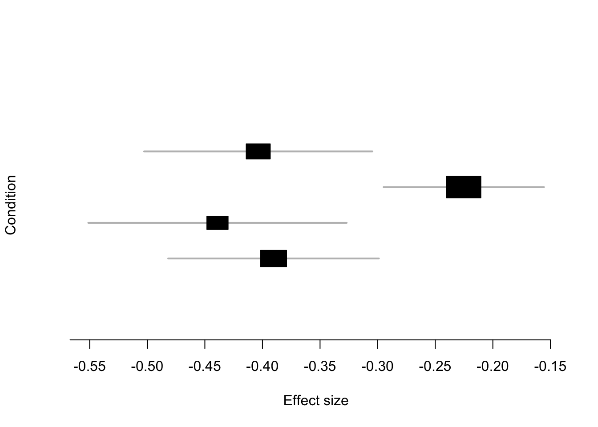
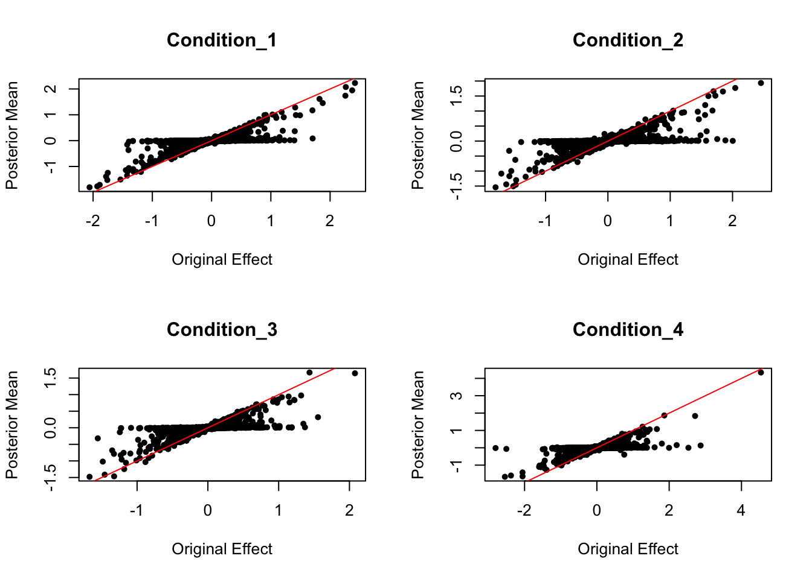
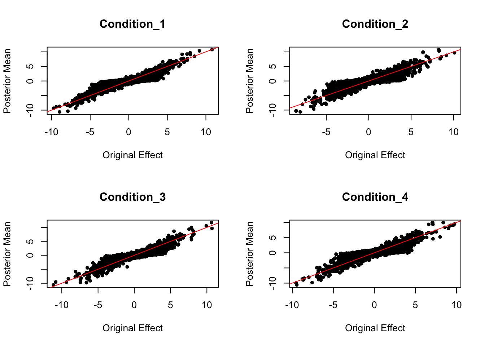
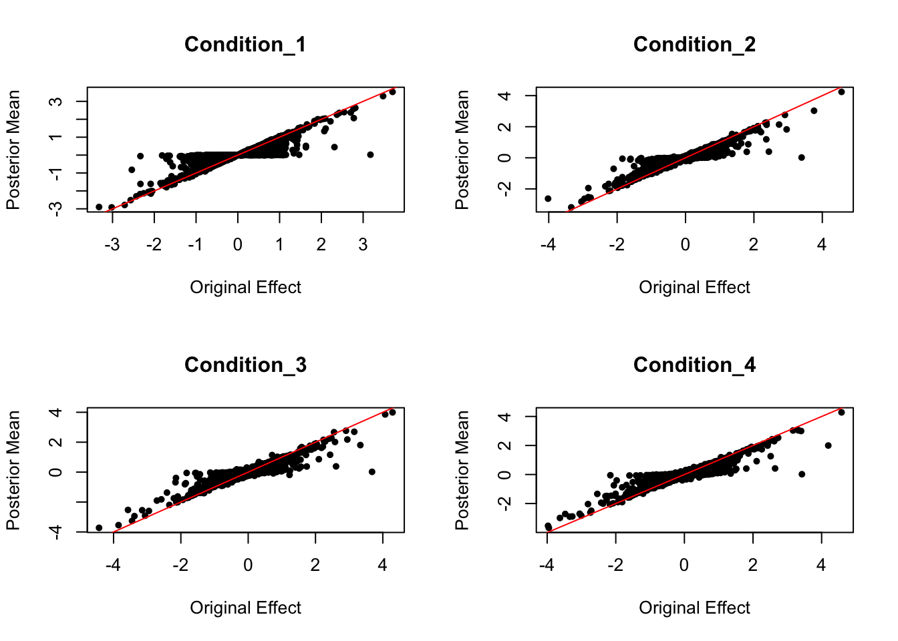
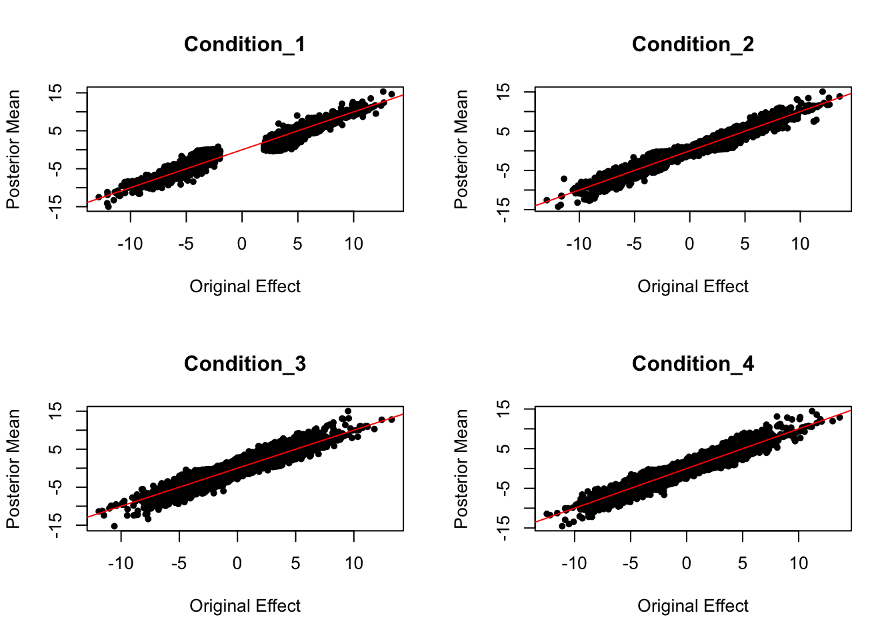
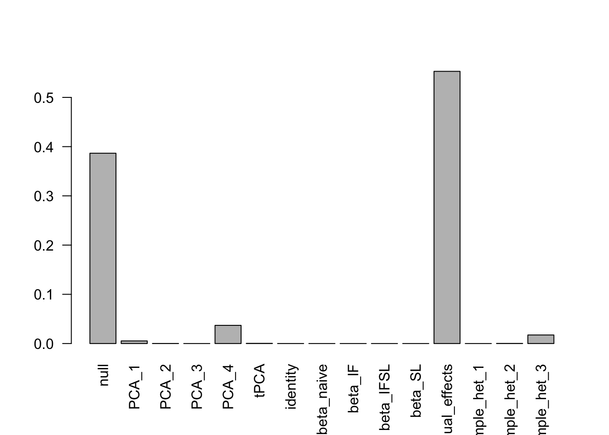

mashr_application1
Yunqi Yang
12/8/2019
Last updated: 2020-01-14
Checks: 6 1
Knit directory: mash-single-cell-rnaseq/
This reproducible R Markdown analysis was created with workflowr (version 1.5.0). The Checks tab describes the reproducibility checks that were applied when the results were created. The Past versions tab lists the development history.
Great! Since the R Markdown file has been committed to the Git repository, you know the exact version of the code that produced these results.
Great job! The global environment was empty. Objects defined in the global environment can affect the analysis in your R Markdown file in unknown ways. For reproduciblity it’s best to always run the code in an empty environment.
The command set.seed(20191120) was run prior to running the code in the R Markdown file. Setting a seed ensures that any results that rely on randomness, e.g. subsampling or permutations, are reproducible.
Great job! Recording the operating system, R version, and package versions is critical for reproducibility.
Nice! There were no cached chunks for this analysis, so you can be confident that you successfully produced the results during this run.
Using absolute paths to the files within your workflowr project makes it difficult for you and others to run your code on a different machine. Change the absolute path(s) below to the suggested relative path(s) to make your code more reproducible.
| absolute | relative |
|---|---|
| /Users/nicholeyang/Desktop/Rotation/mash-single-cell-rnaseq/data/top_snps.RData | data/top_snps.RData |
| /Users/nicholeyang/Desktop/Rotation/mash-single-cell-rnaseq/data/random_snps.RData | data/random_snps.RData |
Great! You are using Git for version control. Tracking code development and connecting the code version to the results is critical for reproducibility. The version displayed above was the version of the Git repository at the time these results were generated.
Note that you need to be careful to ensure that all relevant files for the analysis have been committed to Git prior to generating the results (you can use wflow_publish or wflow_git_commit). workflowr only checks the R Markdown file, but you know if there are other scripts or data files that it depends on. Below is the status of the Git repository when the results were generated:
Ignored files:
Ignored: .DS_Store
Ignored: .Rhistory
Ignored: .Rproj.user/
Ignored: analysis/.DS_Store
Ignored: analysis/.Rhistory
Untracked files:
Untracked: GSE71220_series_matrix.txt.gz
Untracked: analysis/random_snps.RData
Untracked: data/dt_all.RData
Untracked: data/random_snps.RData
Untracked: data/top_snps.RData
Untracked: top_snps.RData
Unstaged changes:
Modified: analysis/RNA_seq_process2.Rmd
Note that any generated files, e.g. HTML, png, CSS, etc., are not included in this status report because it is ok for generated content to have uncommitted changes.
These are the previous versions of the R Markdown and HTML files. If you’ve configured a remote Git repository (see ?wflow_git_remote), click on the hyperlinks in the table below to view them.
| File | Version | Author | Date | Message |
|---|---|---|---|---|
| Rmd | bd319b8 | Nicholeyang0215 | 2020-01-14 | wflow_publish(“analysis/mashr_application.Rmd”) |
| html | 3661091 | Nicholeyang0215 | 2020-01-09 | Build site. |
| Rmd | c2c7daa | Nicholeyang0215 | 2020-01-09 | wflow_publish(“analysis/mashr_application.Rmd”) |
| html | dcbc07a | Nicholeyang0215 | 2020-01-06 | Build site. |
| html | ed57c10 | Nicholeyang0215 | 2020-01-04 | Build site. |
| Rmd | 07625eb | Nicholeyang0215 | 2020-01-04 | wflow_publish(“analysis/mashr_application.Rmd”) |
| html | f74b3e4 | Nicholeyang0215 | 2020-01-04 | Build site. |
| Rmd | 892e43b | Nicholeyang0215 | 2020-01-04 | wflow_publish(“analysis/mashr_application.Rmd”) |
| html | 59bbc5e | Nicholeyang0215 | 2019-11-21 | Build site. |
| Rmd | 87a59f6 | Nicholeyang0215 | 2019-11-21 | wflow_publish(“analysis/mashr_application.Rmd”, verbose = TRUE) |
Remarks:
Used data from “Shared genetic effects on chromatin and gene expression indicate a role for enhancer priming in immune response” https://doi.org/10.1038/s41588-018-0046-7. eQTLs from 4 conditions downloaded from https://zenodo.org/record/1158560#.Xgjl5BdKhp8.
For selecting strong signals: we first filter with the criteria p-value <0.05. Then, take the top signals (the most significant SNP for each gene) in naive condition, and filter gene-SNP pairs in other conditions based on top signals in naive condition. The resulting “top_snps.RData” contains 15678 significant Gene-SNP pairs in 4 conditions.
The 4 conditions are: naive/ IF/ IF+SL/ SL. (IF, SL are two drug treatments)
- Use strong signals to learn data-driven covariance patterns. (2) Fit models on the random subset of data, to learn weights for data-driven covariance matrix + canonical covariance matrix.
Ways to assess the model fit.
Compared the log-likelihood with/without ED step: extremely similar.
library(ashr)
library(mashr)Format data to mashr format
load("/Users/nicholeyang/Desktop/Rotation/mash-single-cell-rnaseq/data/top_snps.RData")
load("/Users/nicholeyang/Desktop/Rotation/mash-single-cell-rnaseq/data/random_snps.RData")
dt_beta_top <- top_snps[,c("beta_naive", "beta_IF", "beta_IFSL", "beta_SL")]
dt_pval_top <- top_snps[,c("p_nominal_naive", "p_nominal_IF", "p_nominal_IFSL", "p_nominal_SL")]
dt_beta_random <- random_snps[,c("beta_naive", "beta_IF", "beta_IFSL", "beta_SL")]
dt_pval_random <- random_snps[,c("p_nominal_naive", "p_nominal_IF", "p_nominal_IFSL", "p_nominal_SL")]
dt_beta_top = as.matrix(dt_beta_top)
dt_pval_top = as.matrix(dt_pval_top)
dt_beta_random = as.matrix(dt_beta_random)
dt_pval_random = as.matrix(dt_pval_random)Correlation structure
data.temp = mash_set_data(dt_beta_random, Shat = NULL, pval = dt_pval_random)
Vhat = estimate_null_correlation_simple(data.temp)
rm(data.temp)data.strong = mash_set_data(dt_beta_top, Shat = NULL, pval = dt_pval_top, V=Vhat)
data.random = mash_set_data(dt_beta_random, Shat = NULL, pval = dt_pval_random, V=Vhat)Data driven covariance
U.pca = cov_pca(data.strong,4)
U.ed = cov_ed(data.strong, U.pca)Fit mashr model with both canonical & data-driven covariance structure
U.c = cov_canonical(data.random)
m = mash(data.random, Ulist = c(U.ed,U.c)) - Computing 40000 x 393 likelihood matrix.
- Likelihood calculations took 10.09 seconds.
- Fitting model with 393 mixture components.
- Model fitting took 83.44 seconds.
- Computing posterior matrices.
- Computation allocated took 139.36 seconds.## Use learned weights to gain posterior estimation for strong signals
m2 = mash(data.strong, g=get_fitted_g(m), fixg=TRUE) - Computing 15678 x 393 likelihood matrix.
- Likelihood calculations took 3.83 seconds.
- Computing posterior matrices.
- Computation allocated took 19.45 seconds.Estimate data driven covariance
U.pca = cov_pca(data.strong,4)
U.ed = cov_ed(data.strong, U.pca)Fit mashr model with both canonical & data-driven covariance structure
U.c = cov_canonical(data.random)
m = mash(data.random, Ulist = c(U.ed,U.c)) - Computing 40000 x 393 likelihood matrix.
- Likelihood calculations took 9.21 seconds.
- Fitting model with 393 mixture components.
- Model fitting took 85.87 seconds.
- Computing posterior matrices.
- Computation allocated took 150.04 seconds.## Use learned weights to gain posterior estimation for strong signals
m2 = mash(data.strong, g=get_fitted_g(m), fixg=TRUE) - Computing 15678 x 393 likelihood matrix.
- Likelihood calculations took 3.71 seconds.
- Computing posterior matrices.
- Computation allocated took 20.70 seconds.print(get_loglik(m))[1] 205233print(get_estimated_pi(m)) null ED_PCA_1 ED_PCA_2 ED_PCA_3 ED_PCA_4
3.865163e-01 5.281307e-03 1.511466e-04 0.000000e+00 3.692821e-02
ED_tPCA identity beta_naive beta_IF beta_IFSL
2.683872e-04 3.302612e-05 0.000000e+00 0.000000e+00 0.000000e+00
beta_SL equal_effects simple_het_1 simple_het_2 simple_het_3
0.000000e+00 5.530311e-01 0.000000e+00 2.458072e-04 1.754470e-02 barplot(get_estimated_pi(m),las = 2)
| Version | Author | Date |
|---|---|---|
| f74b3e4 | Nicholeyang0215 | 2020-01-04 |
mash_plot_meta(m,get_significant_results(m)[1])
| Version | Author | Date |
|---|---|---|
| f74b3e4 | Nicholeyang0215 | 2020-01-04 |
Effect Size Comparison
Posterior Mean VS. Original Effect
Conditions 1-4 are: naive/ IF/ IF+SL/ SL. (IF, SL are two drug treatments)
random signal posterior comparison
par(mfrow = c(2,2))
for (i in c(1:4)){
plot(data.random$Bhat[,i], get_pm(m)[,i], pch = 20, ylab = "Posterior Mean", xlab = "Original Effect", main = paste('Condition_',i, sep = ""))
abline(coef = c(0,1), col = "red")
}
Scaled by standard deviation: Posterior Mean VS. Original Effect
par(mfrow = c(2,2))
for ( i in c(1:4)){
plot(data.random$Bhat[,i]/data.random$Shat[,i], get_pm(m)[,i]/get_psd(m)[,i], pch = 20, ylab = "Posterior Mean", xlab = "Original Effect", main = paste('Condition_',i, sep = ""))
abline(coef = c(0,1), col = "red")
}
strong signal posterior comparison
par(mfrow = c(2,2))
for (i in c(1:4)){
plot(data.strong$Bhat[,i], get_pm(m2)[,i], pch = 20, ylab = "Posterior Mean", xlab = "Original Effect", main = paste('Condition_',i, sep = ""))
abline(coef = c(0,1), col = "red")
}
Scaled by standard deviation: Posterior Mean VS. Original Effect
par(mfrow = c(2,2))
for ( i in c(1:4)){
plot(data.strong$Bhat[,i]/data.strong$Shat[,i], get_pm(m2)[,i]/get_psd(m2)[,i], pch = 20, ylab = "Posterior Mean", xlab = "Original Effect", main = paste('Condition_',i, sep = ""))
abline(coef = c(0,1), col = "red")
}
Run mashr without ED step: loglikelihood are very close.
Data driven covariance
U.pca = cov_pca(data.strong,4)
U.c = cov_canonical(data.random)
m3 = mash(data.random, Ulist = c(U.pca,U.c)) - Computing 40000 x 393 likelihood matrix.
- Likelihood calculations took 10.04 seconds.
- Fitting model with 393 mixture components.
- Model fitting took 86.23 seconds.
- Computing posterior matrices.
- Computation allocated took 155.79 seconds.print(get_loglik(m))[1] 205233print(get_loglik(m3))[1] 205232.7barplot(get_estimated_pi(m3),las = 2)
sessionInfo()R version 3.5.1 (2018-07-02)
Platform: x86_64-apple-darwin15.6.0 (64-bit)
Running under: macOS 10.15
Matrix products: default
BLAS: /Library/Frameworks/R.framework/Versions/3.5/Resources/lib/libRblas.0.dylib
LAPACK: /Library/Frameworks/R.framework/Versions/3.5/Resources/lib/libRlapack.dylib
locale:
[1] en_US.UTF-8/en_US.UTF-8/en_US.UTF-8/C/en_US.UTF-8/en_US.UTF-8
attached base packages:
[1] stats graphics grDevices utils datasets methods base
other attached packages:
[1] mashr_0.2.21.0641 ashr_2.2-38
loaded via a namespace (and not attached):
[1] Rcpp_1.0.2 plyr_1.8.4 compiler_3.5.1
[4] later_1.0.0 git2r_0.26.1 highr_0.7
[7] workflowr_1.5.0 iterators_1.0.12 tools_3.5.1
[10] digest_0.6.18 evaluate_0.13 lattice_0.20-38
[13] rlang_0.4.0 Matrix_1.2-15 foreach_1.4.7
[16] yaml_2.2.0 parallel_3.5.1 mvtnorm_1.0-11
[19] xfun_0.4 stringr_1.4.0 knitr_1.21
[22] fs_1.3.1 rprojroot_1.3-2 grid_3.5.1
[25] glue_1.3.0 R6_2.4.0 rmarkdown_1.11
[28] mixsqp_0.1-97 rmeta_3.0 magrittr_1.5
[31] whisker_0.3-2 backports_1.1.3 promises_1.1.0
[34] codetools_0.2-16 htmltools_0.4.0 MASS_7.3-51.1
[37] assertthat_0.2.1 abind_1.4-5 httpuv_1.5.2
[40] stringi_1.3.1 doParallel_1.0.15 pscl_1.5.2
[43] truncnorm_1.0-8 SQUAREM_2017.10-1